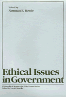

Essays written specifically for this volume by nationally known philosophers consider four ethical questions
Essays written specifically for this volume by nationally known philosophers consider four ethical questions


 Essays written specifically for this volume by nationally known philosophers consider four ethical questions
Essays written specifically for this volume by nationally known philosophers consider four ethical questions

|  |
Ethical Issues in Governmentedited by Norman E. Bowiecloth EAN: 978-0-87722-165-4 (ISBN: 0-87722-165-0) |
"[These] excellent essays by leading analytical philosophers should be very useful to political scientists as well as other philosophers and students."
—Joel Feinberg
The essays in Ethical Issues in Government, written specifically for this volume by nationally known philosophers, consider four questions of the sort that will face America in the coming years: Should legislators serve constituents or conscience? What are the proper bounds of government regulation? Is cost-benefit analysis an ethically acceptable tool for public policy decisions? What is the government's obligation to inform the public?
The constituents or conscience issue is an ethical dilemma that legislators must deal with every time they vote. The analysis of this dilemma provided by Peter French, Gerald MacCallum, Lisa Newton, James Grunebaum, Holly Goldman, and Elizabeth Beardsley differ as to how it should be resolved, but agree that any resolution depends in part on what we mean by the terms "conscience" and "constituents." Concerning the proper bounds of government regulation, Lawrence Becker, Rex Martin, and Eric Mack provide three very distinct theoretical foundations for determining those limits. Scrutiny of cost-benefit analysis highlights the difficulty of determining just what in fact is in the public interest. Vincent Vaccaro and Tom Beauchamp defend the use of this technique, while David Braybrooke and Peter Schotch propose a cost-benefit schema that they say meets all traditional objections. John Byrne closes this section with an essay that re-emphasizes the dangers of using administrative solutions for political problems. In the final section of this volume, Hugo Bedau and Joseph Margolis each provide a set of principles for determining the government's responsibility to inform the public.
Norman E. Bowie is Professor of Philosophy and Director of the Center for the Study of Values at the University of Delaware.
Political Science and Public Policy
Philosophy and Ethics
© 2015 Temple University. All Rights Reserved. This page: http://www.temple.edu/tempress/titles/149_reg.html.